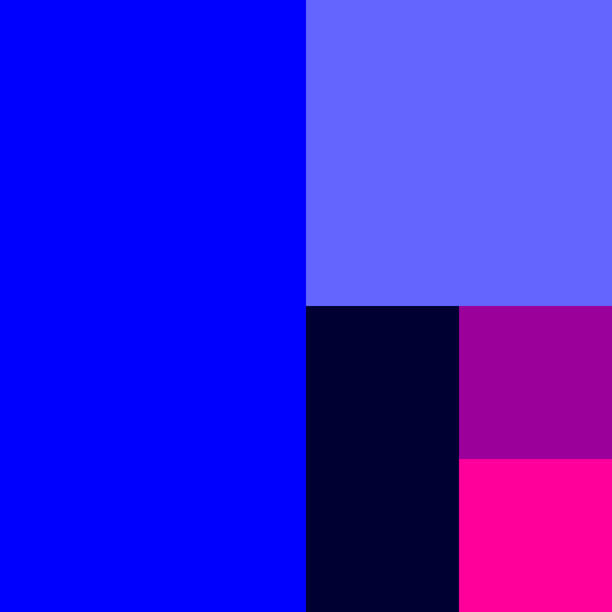

Your sketch:
Add the setup() and draw() functions to exercise1-2/sketch.js and create a canvas at a size of your choosing.
Set the background to any colour you like.
So far, you have used "hard-coded" numbers to set the position and dimensions of most of the shapes you have
drawn. As its quite common to want to position or size shapes relative to the size of the canvas e.g. in the centre or taking up half the canvas,
using variables and simple arithmetic can make positioning and sizing shapes easier. In lecture, we mentioned the width and height system
variables, which store the width and height of the canvas (the values passed to createCanvas()).
Your task is to use the width and height variables to create a layout of five rectangles with the same
proprtions as the rectangles in the expected output images shown below. The proportions should be the same no matter the dimensions of the
canvas. You can choose your own colours. You may find it helpful to use a different colour for each rectangle.
To help you get started, look closely at the biggest rectangle. Hopefully you can tell that its top left corner is at the origin, 0, 0.
The width of the rectangle is equal to half the width of the canvas and its height is equal to the full height of the canvas. The code for
this rectangle is:
rect(0, 0, width / 2, height);
Now try to figure out the rest!
When you are done, check your work using check-exercise1-2.html.
Expected output when the canvas is 600 x 600 px:

Expected output when the canvas is 400 x 200 px:
You only need to edit sketch.js.
The key is to work out the positions and sizes of the rectangles relative to the width and height of the canvas. Try to do this on your own but if you get really stuck, each row of the table below describes the relative locations and proportions of each rectangle (assuming they are drawn in the default CORNER mode):
| x | y | width | height |
|---|---|---|---|
| 0 | 0 | half the width of the canvas | the full height of the canvas |
| half the width of the canvas | 0 | half the width of the canvas | half the height of the canvas |
| half the width of the canvas | half the height of the canvas | one quarter of the width of the canvas | half the height of the canvas |
| three quarters of the width of the canvas | half the height of the canvas | one quarter of the width of the canvas | one quarter of the height of the canvas |
| three quarters of the width of the canvas | three quarters of the height of the canvas | one quarter of the width of the canvas | one quarter of the height of the canvas |
Some useful links in the p5.js documentation: